СП 516.1325800.2022 «Здания из деревянных срубных конструкций. Правила проектиро»
О документе: разработчики, утверждение, регистрация, ключевые слова
Издание официальное
1 ИСПОЛНИТЕЛЬ ̶ Акционерное общество «Научно-исследовательский центр «Строительство» (АО «НИЦ Строительство») ̶ Центральный научноисследовательский институт строительных конструкций имени В.А. Кучеренко (ЦНИИСК им. В.А. Кучеренко)
2 ВНЕСЕН Техническим комитетом по стандартизации ТК 465 «Строительство»
3 ПОДГОТОВЛЕН к утверждению Департаментом градостроительной деятельности и архитектуры Министерства строительства и жилищнокоммунального хозяйства Российской Федерации (Минстрой России)
4 УТВЕРЖДЕН приказом Министерства строительства и жилищнокоммунального хозяйства Российской Федерации (Минстрой России) от 11 апреля 2022 г. № 270/пр и введен в действие с 12 мая 2022 г.
5 ЗАРЕГИСТРИРОВАН Федеральным агентством по техническому регулированию и метрологии (Росстандарт)
В случае пересмотра (замены) или отмены настоящего свода правил соответствующее уведомление будет опубликовано в установленном порядке. Соответствующая информация, уведомление и тексты размещаются также в информационной системе общего пользования - на официальном сайте разработчика (Минстроя России) в сети Интернет
© Минстрой России, 2022
Настоящий нормативный документ не может быть полностью или частично воспроизведен, тиражирован и распространен в качестве официального издания на территории Российской Федерации без разрешения Минстроя России
Дата введения - 2022-05-12
УДК 624.011.14 ОКС 91.080.20
Ключевые слова: здания из деревянных срубных конструкций, деревянные элементы срубных стен, пожарная безопасность, долговечность, безопасность при использовании, ремонтопригодность, энергосбережение
ИСПОЛНИТЕЛЬ:
АО «НИЦ «Строительство»
| Зам. генерального директора по научной работе АО «НИЦ «Строительство», д. т. н., проф. | А.И. Звездов |
|---|---|
| Директор ЦНИИСК им. А.А. Кучеренко, д. т. н., проф. | И.И. Ведяков |
| Зав. лабораторией несущих деревянных конструкций ЦНИИСК им. В.А. Кучеренко, к. т. н. | П.Н. Смирнов |
| Ответственный исполнитель, к.т.н. | Ю.Ю. Славик |
Введение
Настоящий свод правил разработан в целях обеспечения соблюдения требований Федерального закона от 30 декабря 2009 г. № 384-ФЗ «Технический регламент о безопасности зданий и сооружений». Настоящий свод правил разработан в развитие СП 64.13330.2017 «СНиП II-25-80 Деревянные конструкции», СП 352.1325800.2017 Здания жилые одноквартирные с деревянным каркасом. Правила проектирования и строительства, СП 451.1325800.2019 Здания общественные с применением деревянных конструкций. Правила проектирования, СП 452.1325800.2019 Здания жилые многоквартирные с применением деревянных конструкций. Правила проектирования.
Свод правил выполнен авторским коллективом АО «НИЦ «Строительство» ̶ ЦНИИСК им. В.А. Кучеренко (д-р техн. наук И.И. Ведяков , канд. техн. наук П.Н. Смирнов , канд. техн. наук Ю.Ю. Славик , канд. техн. наук И.П. Преображенская , канд. техн. наук А.Д. Ломакин , М.А. Филимонов , К.А. Устименко ) при участии д-ра техн. наук, проф. Ю.А. Варфоломеева , канд. техн. наук В.В. Кислого .
ЗДАНИЯ ИЗ ДЕРЕВЯННЫХ СРУБНЫХ КОНСТРУКЦИЙ Правила проектирования и строительства
Buildings from timber frame structures. Design and construction rules
1Область применения
Свод правил устанавливает требования к обеспечению несущей способности и деформативности несущих элементов зданий, материалам и изделиям, пожарной безопасности, порядку строительства, инженерному оборудованию, обеспечению долговечности. Высота срубной части здания принимается с учетом конструктивных требований и требований пожарной безопасности.
2Нормативные ссылки
В настоящем своде правил использованы нормативные ссылки на следующие документы:
ГОСТ 12.1.044-89 (ИСО 4589-84) Система стандартов безопасности труда. Пожаровзрывоопасность веществ и материалов. Номенклатура показателей и методы их определения
ГОСТ 15.309-98 Системы разработки и постановки продукции на производство. Испытания и приемка выпускаемой продукции. Основные положения
ГОСТ 2140-81 Видимые пороки древесины. Классификация, термины и определения, способы измерения
ГОСТ 4598-2018 Плиты древесно-волокнистые мокрого способа производства. Технические условия
ГОСТ 6564-84 Пиломатериалы и заготовки. Правила приемки, методы контроля, маркировка и транспортирование
ГОСТ 6782.1-75 Пилопродукция из древесины хвойных пород. Величина усушки
ГОСТ 8486-86 Пиломатериалы хвойных пород. Технические условия
ГОСТ 9462-2016 Лесоматериалы круглые лиственных пород. Технические условия
ГОСТ 9463-2016 Лесоматериалы круглые хвойных пород. Технические условия
ГОСТ 10354-82 Пленка полиэтиленовая. Технические условия
ГОСТ 10923-93 Рубероид. Технические условия
ГОСТ 14192-96 Маркировка грузов
- ГОСТ 20022.2-2018 Защита древесины. Классификация
ГОСТ 20850-2014 Конструкции деревянные клееные несущие. Общие технические условия
ГОСТ 24454-80 Пиломатериалы хвойных пород. Размеры
ГОСТ 27751-2014 Надежность строительных конструкций и оснований. Основные положения
ГОСТ 30028.4-2006 Средства защитные для древесины. Экспресс-метод оценки эффективности против деревоокрашивающих и плесневых грибов
ГОСТ 30247.0-94 (ИСО 834-75) Конструкции строительные. Методы испытаний на огнестойкость. Общие требования
ГОСТ 30247.1-94 (ИСО 834-75) Конструкции строительные. Методы испытания на огнестойкость. Несущие и ограждающие конструкции
ГОСТ 30403-2012 Конструкции строительные. Метод испытания на пожарную опасность
ГОСТ 30494-2011 Здания жилые и общественные. Параметры микроклимата в помещениях
ГОСТ 30495-2006 Средства защитные для древесины. Общие технические условия
ГОСТ 30974-2002 Соединения угловые деревянных брусчатых и бревенчатых малоэтажных зданий. Классификация, конструкции, размеры
ГОСТ 31251-2008 Стены наружные с внешней стороны. Метод испытаний на пожарную опасность
ГОСТ 31309-2005 Материалы строительные теплоизоляционные на основе минеральных волокон. Общие технические условия
ГОСТ 31937-2011 Здания и сооружения. Правила обследования и мониторинга технического состояния
ГОСТ 32158-2013 Фанера строительная с наружными слоями из склеенного на ус шпона. Технические условия
ГОСТ 32714-2014 Лесоматериалы. Термины и определения
ГОСТ 33080-2014 Конструкции деревянные. Классы прочности конструкционных пиломатериалов и методы их определения
ГОСТ 33081-2014 Конструкции деревянные клееные несущие. Классы прочности элементов конструкций и методы их определения
ГОСТ 33082-2014 Конструкции деревянные. Методы определения несущей способности узловых соединений
ГОСТ 33124-2014 Брус многослойный клееный из шпона. Технические условия
ГОСТ Р 51829-2001 Листы гипсоволокнистые. Технические условия
ГОСТ Р 52289-2019 Технические средства организации дорожного движения. Правила применения дорожных знаков, разметки, светофоров, дорожных ограждений и направляющих устройств
ГОСТ Р 53292-2009 Огнезащитные составы и вещества для древесины и материалов на ее основе. Общие требования. Методы испытаний
ГОСТ Р 56309-2014 Плиты древесные строительные с ориентированной стружкой (OSB). Технические условия
ГОСТ Р 56705-2015 Конструкции деревянные для строительства. Термины и определения
ГОСТ Р 56706-2015 Плиты клееные из пиломатериалов с перекрестным расположением слоев. Технические условия
ГОСТ Р 57157-2016/EN 1075:1999 Конструкции деревянные. Методы испытаний соединения на металлических зубчатых пластинах
ГОСТ Р 57790-2017 Конструкции деревянные несущие. Методы испытаний на прочность и деформативность
ГОСТ Р 57998-2017/EN 14250:2010 Конструкции деревянные. Требования к сборным несущим элементам конструкций, соединенным металлическими зубчатыми пластинами
ГОСТ Р 58559-2019 Конструкции деревянные. Металлические зубчатые шпонки. Методы испытаний
ГОСТ Р 58562-2019 Конструкции деревянные. Металлические кольцевые шпонки. Методы испытаний
ГОСТ Р 58942-2020 Система обеспечения точности геометрических параметров в строительстве. Технологические допуски
ГОСТ Р 59655-2021 Детали и изделия деревянные для малоэтажных жилых и общественных зданий. Технические условия
СП 1.13130.2020 Системы противопожарной защиты. Эвакуационные пути и выходы
СП 2.13130.2020 Системы противопожарной защиты. Обеспечение огнестойкости объектов защиты
СП 4.13130.2013 Системы противопожарной защиты. Ограничение распространения пожара на объектах защиты. Требования к объемнопланировочным и конструктивным решениям (с изменением № 1)
СП 14.13330.2018 «СНиП II-7-81* Строительство в сейсмических районах» (с изменением № 2)
СП 17.13330.2017 «СНиП II-26-76 Кровли» (с изменениями № 1, № 2)
СП 20.13330.2016 «СНиП 2.01.07-85* Нагрузки и воздействия» (с изменениями № 1, № 2, № 3)
СП 22.13330.2016 «СНиП 2.02.01-83* Основания зданий и сооружений» (с изменениями № 1, № 2, № 3, № 4)
СП 28.13330.2017 «СНиП 2.03.11-85 Защита строительных конструкций от коррозии» (с изменениями № 1, № 2, № 3)
СП 30.13330.2020 «СНиП 2.04.01-85* Внутренний водопровод и канализация зданий»
СП 42.13330.2016 «СНиП 2.07.01-89* Градостроительство. Планировка и застройка городских и сельских поселений» (с изменениями № 1, № 2)
СП 48.13330.2019 «СНиП 12-01-2004 Организация строительства»
СП 50.13330.2012 «СНиП 23-02-2003 Тепловая защита зданий» (с изменениями № 1, № 2)
СП 51.13330.2011 «СНиП 23-03-2003 Защита от шума» (с изменениями № 1, № 2)
СП 52.13330.2016 «СНиП 23-05-95* Естественное и искусственное освещение» (с изменениями № 1, № 2)
СП 54.13330.2016 «СНиП 31-01-2003 Здания жилые многоквартирные» (с изменениями № 1, № 2, № 3)
СП 55.13330.2016 «СНиП 31-02-2001 Дома жилые одноквартирные» (с изменением № 1)
СП 59.13330.2020 «СНиП 35-01-2001 Доступность зданий и сооружений для маломобильных групп населения»
СП 60.13330.2020 «СНиП 41-01-2003 Отопление, вентиляция и кондиционирование воздуха»
СП
64.13330.2017
«СНиП изменениями № 1, № 2, № 3)
СП 70.13330.2012 «СНиП 3.03.01-87 Несущие и ограждающие конструкции» (с изменениями № 1, № 3, № 4)
СП 73.13330.2016 «СНиП 3.05.01-85 Внутренние санитарно-технические системы зданий» (c изменением № 1)
СП 76.13330.2016 «СНиП 3.05.06-85 Электротехнические устройства»
СП 118.13330.2012 «СНиП 31-06-2009 Общественные здания и сооружения» (с изменениями № 1, № 2, № 3, № 4)
СП 124.13330.2012 «СНиП 41-02-2003 Тепловые сети» (с изменениями № 1, № 2)
СП 255.1325800.2016 Здания и сооружения. Правила эксплуатации. Основные положения (с изменениями № 1, № 2)
СП 256.1325800.2016 Электроустановки жилых и общественных зданий. Правила проектирования и монтажа (с изменениями № 1, № 2, № 3, № 4)
СП 299.1325800.2017 Конструкции деревянные с узлами на винтах. Правила проектирования (с изменением № 1)
СП 352.1325800.2017 Здания жилые одноквартирные с деревянным каркасом. Правила проектирования и строительства
СП 402.1325800.2018 Здания жилые. Правила проектирования систем газопотребления
СП 451.1325800.2019 Здания общественные с применением деревянных конструкций. Правила проектирования
СП 452.1325800.2019 Здания жилые многоквартирные с применением деревянных конструкций. Правила проектирования
СП 454.1325800.2019 Здания жилые многоквартирные. Правила оценки аварийного и ограниченно-работоспособного технического состояния
II-25-80
Деревянные конструкции»
(с
СанПиН 1.2.3685-21 Гигиенические нормативы и требования к обеспечению безопасности и (или) безвредности для человека факторов среды обитания
СанПиН 2.1.3684-21 Санитарно-эпидемиологические требования к содержанию территорий городских и сельских поселений, к водным объектам, питьевой воде и питьевому водоснабжению, атмосферному воздуху, почвам, жилым помещениям, эксплуатации производственных, общественных помещений, организации и проведению санитарно-противоэпидемических (профилактических) мероприятий.
Примечание При пользовании настоящим сводом правил необходимо проверить действие ссылочных документов в информационной системе общего пользования на официальном сайте федерального органа исполнительной власти в сфере стандартизации в сети Интернет или по ежегодному информационному указателю «Национальные стандарты», который опубликован по состоянию на 1 января текущего года, и по выпускам ежемесячного информационного указателя «Национальные стандарты» за текущий год. Если заменен ссылочный документ, на который дана недатированная ссылка, то рекомендуется использовать действующую версию этого документа с учетом всех внесенных в данную версию изменений. Если заменен ссылочный документ, на который дана датированная ссылка, то рекомендуется использовать версию этого документа с указанным выше годом утверждения (принятия). Если после утверждения настоящего свода правил в ссылочный документ, на который дана датированная ссылка, внесено изменение, затрагивающее положение, на которое дана ссылка, то это положение рекомендуется применять без учета данного изменения. Если ссылочный документ отменен без замены, то положение, в котором дана ссылка на него, рекомендуется применять в части, не затрагивающей эту ссылку. Сведения о действии сводов правил целесообразно проверить в Федеральном информационном фонде стандартов.
3Термины и определения
В настоящем своде правил применены термины и определения по ГОСТ 32714, ГОСТ Р 56705, СП 2.13130, СП 55.13330, СП 118.13330, а также следующие термины с соответствующими определениями:
- 3.1сруб
- Стеновая конструкция здания, возводимая из бревенчатых или брусчатых элементов, уложенных горизонтальными рядами, в местах пересечения элементы соединяются врубками.
- 3.2венец
- Горизонтальный ряд бревен или брусьев в срубе, соединенных в углах и примыканиях внутренних стен для предотвращения сдвига во взаимно перпендикулярных направлениях.
- 3.3врубка
- Соединение элементов сруба из бревен, бруса в углах (угловая врубка) и узлах в местах пересечения стен с выпуском (врубка с выпуском), при котором концы пересекающих венцов выступают за плоскость стены, или без него.
- 3.4венцовый паз
- Профиль нижней и верхней частей венца, служащий для более плотного прилегания венцов по высоте.
- 3.5межвенцовый уплотнитель
- Материал, предназначенный для заделки пазов между бревнами или брусьями с целью предотвращения продувания сруба и обеспечения плотного прилегания венцов при эксплуатационных нагрузках.
- 3.6усадка
- Уменьшение высоты стены сруба вследствие усушки древесины поперек волокон, уплотнения древесины и межвенцового пространства под воздействием нагрузки.
- 3.7окосячка (обсада, обсадная коробка)
- Устанавливаемая в вертикальные пазы или шипы оконных или дверных проемов направляющая конструкция в виде рамы (обсадная коробка), в которой крепятся не подверженные усадке конструкции (оконная или дверная коробка), обеспечивая вертикальное перемещение стены сруба при усадке.
- 3.8компенсатор усадки
- Металлическая регулируемая опора не подверженных усадке элементов конструкций для ликвидации межвенцовых зазоров, возникающих при усадке стен сруба.
- 3.9лафет (двухкантный брус)
- Брус с двумя противоположными обработанными пластями, в том числе со сбегом.
- 3.10трещинообразование
- Естественное возникновение радиально направленных трещин, возникающих в лесоматериалах при их сушке или усушке в процессе эксплуатации.
- 3.11нагель деревянный
- Механическая связь цилиндрической или прямоугольной формы для восприятия сдвигающих усилий смежных венцов сруба.
- 3.12высота срубной части здания
- Вертикальный размер, измеряемый от основания сруба до низа стропильных конструкций.
4Основные положения
5Конструктивные требования к элементам зданий и их объемнопланировочным решениям
5.1Фундаменты
Положения, которыми следует руководствоваться при выборе видов фундаментов, требований к их элементам и материалам, стенам подвалов и технических подполий, глубине заложения приведены в СП 22.13330.
Примеры конструктивных решений отдельных типов узлов фундаментов приведены в А.4 (рисунки А.6-А.8).
5.2Срубные стены и перегородки
Наружные стены сруба в каждом венце устраивают с выпусками (выступающими концами бревна или бруса величиной не менее 100 мм от наружной грани стены) или без них для образования угловых связей пересекающихся стен по ГОСТ 30974.
Высота стены каждого этажа жилых и общественных зданий должна быть не менее 2,5 м при обеспечении общей жесткости стены. Максимальное расстояние между врубками стен, учитываемое по осям бревен (брусьев),
СП 516.1325800.2022 должно быть 8 м при раскреплении врубок по всей высоте и 6 м при устройстве врубок без раскрепления.
Для исключения горизонтального сдвига бревен в стенах сруба друг относительно друга между бревнами устанавливают деревянные или стальные нагели круглой или прямоугольной формы сечения на расстоянии 1,5-2,0 м в шахматном порядке по высоте сруба. Для обеспечения общей жесткости стены устанавливают стальные стяжные шпильки диаметром 12-16 мм в местах пересечения стен и в зоне оконных и дверных проемов.
Следует учитывать, что при длительной эксплуатации в зоне контакта со стальными элементами и попадании их в точку росы древесина подвергается интенсивному повреждению дереворазрушающими грибами вследствие конденсата.
Для исключения таких последствий целесообразно использовать эти элементы из стеклопластика или поверхности стальных элементов изолировать от древесины нанесением полимерных покрытий или вставлять их в полимерные трубки.
Пример прошивки стены указанными элементами показан на рисунке 5.1.
Рисунок 5.1 Пример прошивки срубной стены
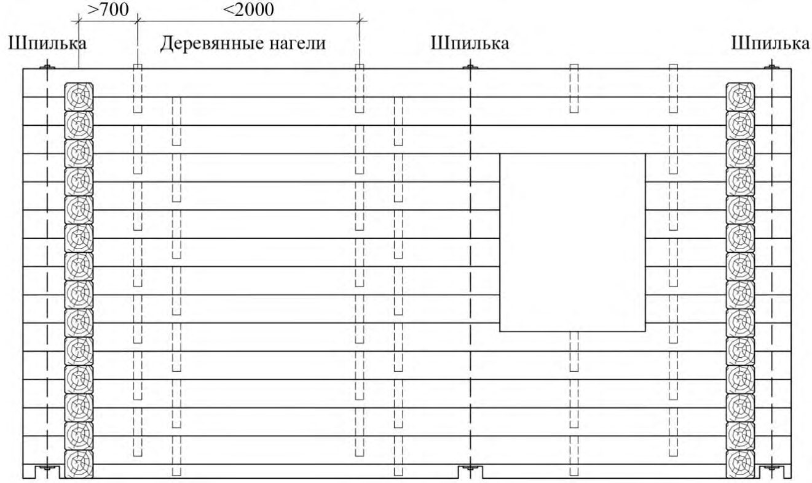
Примеры срубов стен из брусьев приведены в А.2.
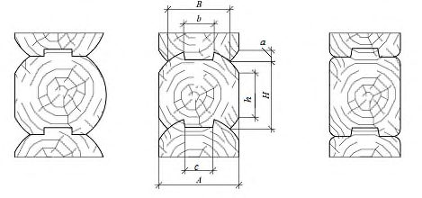
а ̶ профилированное прорезью b = (0,5÷0,6) d , h = (0,8÷0,87) d;
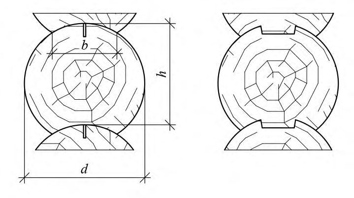
б ̶ профилированное пазами
Рисунок 5.2 Основные конструктивные решения поперечных сечений оцилиндрованных бревен
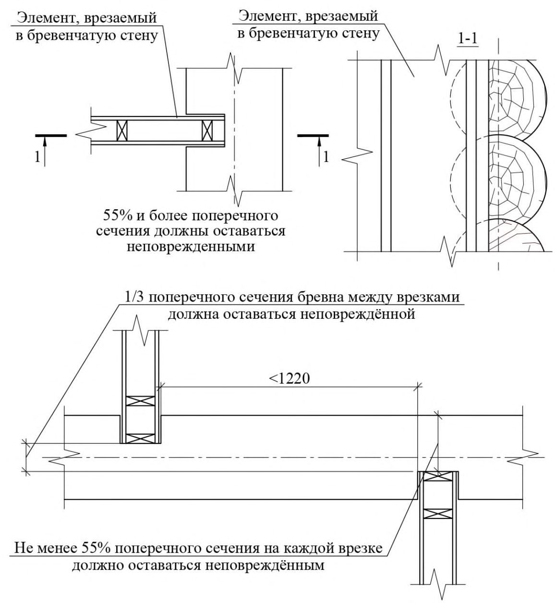
Рисунок 5.3 Основные конструктивные решения поперечных сечений массивных брусьев
Для защиты от атмосферных осадков и отвода воды от поверхностей горизонтального шва с верхнего ребра наружной грани прямоугольного бруса снимают фаску a 15×15 при толщине стены до 120 мм и 20×20 при толщине стены более 120 мм.
Геометрические размеры профилей устанавливаются конструктивно, исходя из стандартизованных размеров брусьев и необходимой площади их опирания.
В случае врезки перегородок с противоположных сторон стены расстояние между осями стен должно быть не менее 125 см.
Правила устройства вырезов в стенах сруба показано на рисунке 5.4.
Рисунок 5.4 Устройство вырезов в срубных стенах
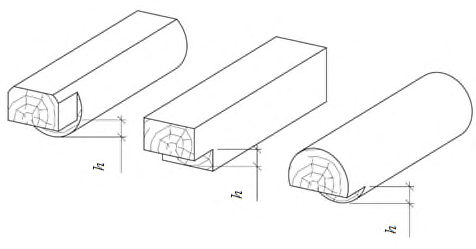
Рисунок 5.5 ̶ Примеры стесывания концов ригелей и балок
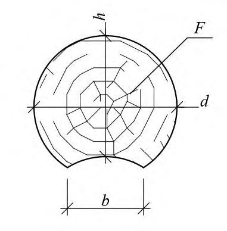
где F - площадь сечения круглого бревна; h - диаметр бревна минус глубина припазовки (рисунок 5.6).
Например, при ширине припазовки b= 0,5 d, получим геометрически эквивалентную толщину стены bэ равную 0,855 d .
Рисунок 5.6 Габариты поперечного сечения бревна
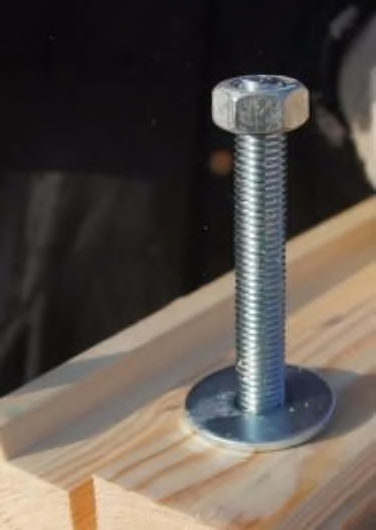
Для этого необходимо предусматривать устройство свесов крыши с вылетом от стены не менее 30 см в зависимости от этажности здания, а также надежной гидроизоляции нижних венцов срубов от фундамента.
5.3Дверные и оконные проемы
В связи с использованием в качестве элементов срубных стен бревен или брусьев различной влажности в процессе эксплуатации из-за усушки древесины происходит усадка сруба, что следует учитывать при устройстве оконных и дверных проемов.
При монтаже стен влажность элементов сруба должна быть в пределах влажности воздушно-сухой древесины (18 % ÷ 23 %). Это снижает величину ожидаемой усадки стены от усушки. При исходной влажности элементов более 23 % усадка может достигать 60 мм на метр высоты стены в зависимости от условий эксплуатации и используемых материалов для уплотнения швов.
Для снижения влияния усадки стен, уменьшения зазоров между венцами стен срубов, следует предусматривать различные конструктивные элементы: стяжные шпильки с увеличенными шайбами, требующие подтяжки в процессе эксплуатации; самонарезающие винты с пружинами; стяжные шпильки с пружинами; самонарезающие винты с широкой шляпкой. При этом шаг их расстановки определяется исходя из требуемого усилия прижатия.
Общие виды конструктивных элементов приведены на рисунке 5.7. а б
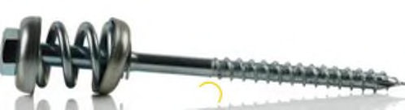
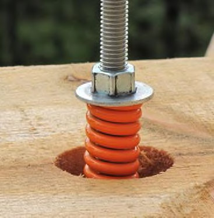
в г
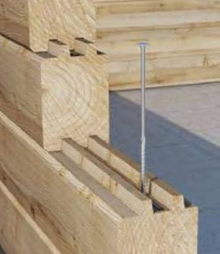
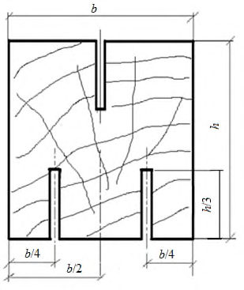
а ̶ стяжная шпилька с увеличенной шайбой; б ̶ самонарезающий винт с пружиной; в ̶ стяжная шпилька с пружиной; г ̶ самонарезающий винт с широкой шляпкой
Рисунок 5.7 ̶ Конструктивные элементы для компенсации усадки
Допускается устройство паза в окосячке и шипа для посадки в элементах сруба (рисунок А.2, г ).
Вследствие особенностей монтажа и перевозки элементов сруба пропилы допускается устраивать после монтажа сруба и устанавливать, при этом, окончательные размеры проемов.
Окосячки не должны ограничивать свободную усадку сруба по отношению к установленным окнам и дверям и надежно воспринимать боковые нагрузки на стены. В процессе монтажа сруба обе стороны проемов должны быть укреплены вертикальными сквозными вставками на высоту проема за вычетом высоты усадочного пространства, устраиваемого вверху проемов.
При устройстве окосячки позже, чем через две недели после монтажа проемов, следует устанавливать в паз скользящий брус для сохранения вертикальности стены.
При выполнении указанных требований всегда следует учитывать величину исходной влажности элементов сруба и ожидаемую величину усушки древесины в процессе эксплуатации сруба.
Усадочное пространство устраивают в верхней части проемов и закрывают его наличниками.
Ширина простенков между проемами должна соответствовать 5.2.11.
5.4Конструкции здания, не подверженные усадке
В конструктивных решениях креплений несущих элементов (стоек, колонн) необходимо предусматривать регулировочные компенсаторы усадки, устанавливаемые при монтаже, для ликвидации возникающих зазоров в процессе эксплуатации здания.
- большую усадку срубов нижнего уровня;
- при перестройке или реконструкции старых зданий - различную усадку старых и новых стен;
- при выводе дымоходов через кровлю и перекрытия -беспрепятственность усадке и соблюдение после усадки расстояний, регламентированных правилами пожарной безопасности.
5.5Перекрытия
Конструктивные решения перекрытий, требования к их элементам и материалам следует выбирать по 7.2, СП 352.1325800, СП 451.1325800 и СП 452.1325800.
Примеры конструктивных решений перекрытий приведены в А.3 (рисунки А.3 ̶ А.5).
5.6Крыша
Конструктивные решения, узлы элементов каркаса крыши, а также их проектирование приведены в СП 64.13330 и других нормативных документах.
Устройство кровельного покрытия - по СП 17.13330.
5.7Объемно-планировочные требования
Величина предельных горизонтальных перемещений должна быть не более 1/300 высоты срубной части здания.
\_\_\_\_\_\_\_\_\_\_\_\_\_\_\_\_
* Горизонтальные перемещения и устойчивость срубной части здания высотой более 8 м следует определять по данным испытаний конструкций стен.
6Требования к несущим конструкциям зданий
Жесткость стен также повышается за счет вертикальных брусков, вставляемых в пазы оконных или дверных проемов в зависимости от конструктивного решения окосячки.
При использовании врубок типа «ласточкин хвост» и подобных, которые предотвращают смещение бревен, брусьев за счет эффекта заклинивания, прошивку нагелями допускается не выполнять.
Глубина пропила должна быть не более 1/3 высоты сечения бревна (бруса).
7Требования к материалам, конструктивным решениям элементов зданий
7.1Деревянные элементы срубных стен
Определяющие показатели качества деревянных элементов ̶ нормированные вышеуказанными стандартами пороки древесины согласно ГОСТ 2140.
Длина бревен 3,0 ̶ 6,5 м с градацией 0,5 м.
Сбег бревна согласно СП 64.13330 при расчете конструкций следует принимать равным 0,8 см на 1 пог. м его длины, а для лиственницы - 1 см на 1 пог. м длины. Влажность бревна - естественная. Предпочтение следует отдавать лесоматериалам зимней заготовки, так как в летний период древесина чаще подвергается биоповреждениям вследствие неправильного хранения и эксплуатации; древесина, не имеющая сухого иммунитета, должна храниться для просушки и должна быть предварительно окорена.
Между нижним венцом и фундаментом должна быть уложена в два слоя гидроизоляция из влагозащитных материалов, например рубероида по ГОСТ 10923.
Допускается устройство подкладочной доски из лиственницы, как элемента дополнительной гидрои влагозащиты. Материал не должен конденсировать, подвергаться длительному увлажнению атмосферными осадками при монтаже, должен быть долговечным.
Влажность бруса должна соответствовать влажности воздушно-сухой древесины или подвергаться дополнительной атмосферной или камерной сушке. Для осуществления качественной камерной сушки перед сушкой брус по сечению следует профилировать по длине пропилами шириной до 4 мм с размещением их в четвертях ширины бруса b на глубину 1/3 его высоты h согласно рисунку 7.1.
Рисунок 7.1 Устройство прорезей перед камерной сушкой брусьев
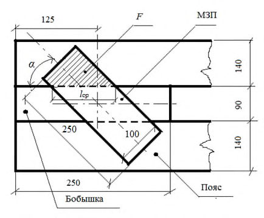
7.2Деревянные элементы перекрытий
- несущую конструкцию;
- покрытие;
- шумоизоляцию;
- теплоизоляцию;
- нижнее покрытие.
Для деревянных домов применяют следующие виды перекрытий: цокольные, междуэтажные и чердачные.
В конструкцию цокольных перекрытий, в связи с разницей температур и влажности помещений, входят: пароизоляционный слой из пленки и теплоизоляционная прослойка.
В конструкциях междуэтажных перекрытий при одинаковых температурно-влажностных условиях помещений, которые они разделяют, нет необходимости применять прослойки пароизоляционных материалов, а деревянные элементы не нуждаются в обработке специальными гидроизоляционными пропитками.
Конструктивное устройство чердачного перекрытия должно включать различные пленочные материалы и прослойку теплоизоляции подобно цокольному перекрытию.
- покрытие пола (чистовое покрытие, подкладочные слои, обрешетки);
- пароизоляцию;
- утепление между лагами;
- перекрестное утепление под или над лагами, при необходимости;
- устройство паровыводящей пленки (мембраны) со стороны улицы;
- устройство стальной сетки от грызунов.
При этом шаг лаг необходимо назначать из расчета по предельным состояниям и исходя из ширины утеплителя: для минеральной ваты расстояние между лагами в свету должно быть на 10-20 мм меньше ширины утеплителя.
Конструктивное устройство чердачного перекрытия должно включать различные ветро-, паро-, гидроизоляционные материалы и теплоизоляцию.
Для повышения качества шумоизоляционных характеристик междуэтажных перекрытий допускается применять дополнительные конструктивные слои, прокладки, направленные на поглощение соответствующих шумовых воздействий (корпусный шум, акустический шум, шаговый шум и т.д.). При использовании утеплителя в качестве шумоизоляции рекомендуется применение изоляционной пленки от проникновения волокон утеплителя в помещение.
- лаги массивного сечения из: круглых лесоматериалов по ГОСТ 9463; бруса массивного и пиломатериалов (досок) по ГОСТ 8486, ГОСТ 24454 и ГОСТ 33080; бруса многослойного клееного по ГОСТ 20850 и ГОСТ 33081; бруса многослойного клееного из шпона (LVL) по ГОСТ 33124; плит клееных из пиломатериалов с перекрестным расположением слов (ДПК/CLT) по ГОСТ Р 56706;
- комбинированные лаги двутаврового или коробчатого сечений с использованием вышеуказанных материалов, а также плит древесных строительных с ориентированной стружкой (OSB) по ГОСТ Р 56309 и фанеры строительной по ГОСТ 32158;
- лаги из пиломатериалов различного сечения, сплачиваемых по высоте сечения с помощью металлических зубчатых пластин (МЗП).
7.3Деревянные элементы крыши
- кровельного покрытия;
- несущих конструкций (стропила, балки, фермы и др.);
- утеплителя (для теплой крыши);
- нижнего покрытия (черновая подшивка и отделка).
Кровельное покрытие обеспечивает необходимую защиту от проникновения атмосферных осадков и талой воды.
При варианте утепленной крыши снизу устанавливается подшивка чердачного потолка, над которой располагаются пароизоляционный слой и утеплитель, обеспечивающие необходимую паро- и теплоизоляцию, для повышения теплоизоляционных свойств устраивается контрутепление в обратном направлении.
Конструкцию кровельного покрытия (гидроизоляционного слоя) и применяемые материалы выбирают по СП 17.13330.
8Основные положения по расчету и конструированию элементов зданий из срубных конструкций
8.1Фундаменты
При расчете фундаментов следует руководствоваться СП 22.13330.
8.2Срубные стены и перегородки
Величины нагрузок и воздействий принимают согласно СП 20.13330.
При расчетах учитывается, что длина врубки должна быть не менее 100 мм (большее значение длины в расчетах не учитывается), максимальное расстояние между врубками (длина стены L ) - 8 м. Учитывается также эффективная толщина бревна или бруса стены bef , принимаемая для бревна 0,5 его диаметра d , а для бруса ̶ 0,75 его толщины b .
При расчете врубок стен из бревна N вр.бр = 10 · R А с,90 · 0,5 d , а для стен из бруса N вр.бр = 10 · R А с,90 · 0,75 b .
При расчете стенового бревна N ст.бр = R А с,90 · L · 0,5 d , а для стенового бруса N ст.бр. = R А с,90 · L · 0,75 b .
При расчете стены с врубками из бревна N ст или бруса N ст.бр = 2 N вр.бр + N ст.бр .
8.3Перекрытия
- сплачиваемые на опорных участках балки с помощью МЗП (рисунок 8.1). Балка сплачивается по высоте сечения для увеличения ее высоты из пиломатериалов небольшой ширины;
- балки-фермы (рисунок 8.2) с параллельными поясами из пиломатериалов. Пояса сплачиваются с двух кромок путем запрессовки в древесину специальных штампованных металлических зубчатых косяков (МЗК) с зубьями на концах.
Металлические зубчатые пластины и косяки не должны активизировать образование трещин в соединяемых элементах, особенно на торцовых участках.
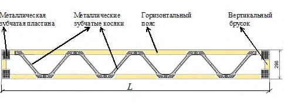
F ̶ сдвигаемая площадь МЗП; l ср ̶ линия среза МЗП; α ̶ угол наклона МЗП
Рисунок 8.1 ̶ Расположение металлической зубчатой пластины на опорной части балки
Рисунок 8.2 ̶ Конструктивное решение балки-фермы с применением металлических зубчатых косяков
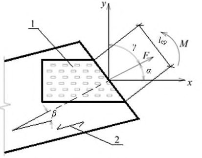
Величины этого показателя должны быть определены испытаниями при нагружении соединения на растяжение, сжатие и срез с различными параметрами ориентации МЗП по отношению к направлению действия нагрузки и волокнам древесины (см. рисунок. 8.3).
1 -площадь пластины; 2 -направление волокон древесины; F ̶ усилие, действующее на соединение; М ̶ момент, действующий на соединение; α - угол между направлением действия усилия F и продольной осью пластины; β ̶ угол между направлением действия усилия F и направлением волокон древесины; γ ̶ угол между направлением действия усилия F и поперечной осью пластины ; l ср ̶ линия среза пластины
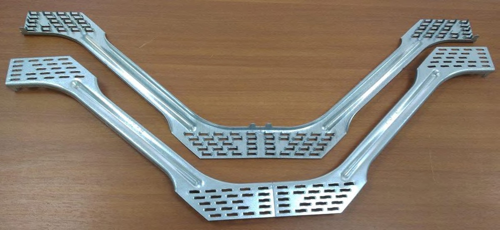
Рисунок 8.3 ̶ Геометрические параметры работы соединения на металлической зубчатой пластине
Рисунок 8.4 ̶ Кронштейны с перфорированным зубчатым устройством
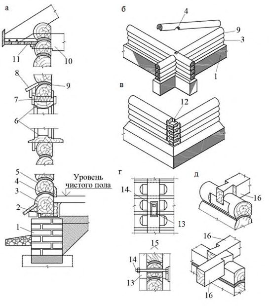
Расчет конструктивных решений элементов и их испытания производят по СП 64.13330.
8.4Крыша
- при проектировании и расчете несущей способности и деформативности ферм -требований СП 64.13330.2017 (раздел 9 и приложение К), а также приложения В;
- при проведении автоматизированного компьютерного расчета ферм, определении несущей способности ферм по показателям их кратковременных испытаний, определении надежности работы соединений на МЗП в узлах ферм - требований приложения В.
9Обеспечение пожарной безопасности зданий
Степень огнестойкости и класс пожарной опасности зданий из срубных конструкций и их пожарных отсеков согласно СП 2.13130 и СП 4.13130 должны устанавливаться в зависимости от их функционального назначения, этажности, плащади этажа в пределах пожарного отсека.
Пределы огнестойкости и классы пожарной опасности строительных конструкций определяются в соответствии с [2] и СП 2.13130 по ГОСТ 30247.0, ГОСТ 30247.1, ГОСТ 30403.
При применении в качестве теплоизоляции между венцами срубных стен естественных уплотняющих материалов (пакли и др.) их следует обрабатывать огнезащитными составами, предназначенными для эксплуатации на открытом воздухе или под навесом в соответствии с требованиями ГОСТ Р 53292.
10Обеспечение санитарно-эпидемиологических требований
Расчетную температуру воздуха и кратность воздухообмена в помещениях зданий из деревянных срубных конструкций следует принимать в соответствии с СП 54.13330, СП 55.13330, СП 118.13330.
11Требования по энергосбережению зданий
- приведенное сопротивление теплопередаче и воздухопроницаемость ограждающих конструкций не ниже требуемых по СП 50.13330;
- системы отопления, вентиляции, кондиционирования воздуха и горячего водоснабжения с ручным или автоматическим регулированием;
- инженерные системы при централизованном снабжении энергоресурсами оснащены приборами учета тепловой энергии, холодной и горячей воды, электроэнергии и газа.
- объемно-планировочные решения, обеспечивающие улучшение показателей компактности;
- наиболее рациональную ориентацию здания и его помещений с учетом преобладающих направлений холодного ветра и потоков солнечной радиации;
- применение эффективного инженерного оборудования с повышенным коэффициентом полезного действия;
- применение энергосберегающих источников искусственного освещения.
12Требования к инженерному оборудованию
13Требования, предъявляемые к процессу строительства
Процесс строительства зданий с применением срубных деревянных конструкций должен включать следующие этапы:
- проверку и приемку сопроводительной документации на комплекты материалов и конструкций для строительства здания;
- обеспечение безопасного транспортирования конструкций и их хранения на строительной площадке;
- выборочный входной контроль соответствия качества поставленных для строительства материалов и конструкций;
- выполнение строительно-монтажных работ.
13.1Сопроводительные документы на комплект конструкций здания
- спецификацию конструкций, деталей и вспомогательных материалов;
- рабочие чертежи здания;
- технологическую карту сборки элементов здания (кроме срубов ручной сборки);
- инструкцию по складированию и хранению комплекта;
- паспорт здания;
- сертификат соответствия на конструкции, при необходимости;
- акт сдачи-приемки комплекта между предприятием-изготовителем конструкций и изделий и строительной организацией.
- спецификация должна соответствовать комплекту рабочих чертежей здания;
- рабочие чертежи должны содержать сборочные узлы и элементы здания;
- технологическая карта сборки здания должна быть составлена строительной организацией в последовательности от фундамента до крыши;
- инструкция по складированию и хранению комплекта составляется предприятием-изготовителем конструкций и изделий с учетом требований настоящего свода правил и передается строительной организации для исполнения;
- паспорт здания составляется предприятием-изготовителем конструкций и изделий и должен включать разделы:
А Общие сведения о здании;
- Б Архитектурный раздел;
- В Конструктивный раздел.
Возможно включение раздела «Г Состав инженерных систем», если это предусмотрено договором поставки изделий.
Разделы должны содержать следующие сведения: раздел А:
- назначение здания;
- материалы основных конструктивных элементов здания;
- этажность здания;
- виды, количество помещений и их площадь;
- капитальность и предполагаемый срок службы здания;
раздел Б:
- поэтажные планировки и поперечные разрезы здания;
- фасады и план крыши;
раздел В:
- планы перекрытий и стропильной системы крыши;
- основные узлы соединений элементов здания;
- эксплуатационные воздействия, на которые рассчитаны конструкции (нагрузки, температурно-влажностные воздействия, сейсмичность и др.).
Если предусмотрена договором поставка инженерных систем, следует включать информацию о их составе (отопление, водоснабжение, канализация, вентиляция, энергоснабжение);
- основные требования безопасности при обслуживании систем.
- наименование и место нахождения сторон;
- номер договора на поставку комплекта и дату его заключения;
- дату изготовления конструкций и изделий комплекта;
- знак (штамп) службы технического контроля предприятияизготовителя.
13.2Требования к транспортированию и хранению материалов и комплектов конструкций заводского изготовления
- наименование или товарный знак предприятия-изготовителя;
- номер пакета;
- количество деталей каждого вида;
- дату изготовления;
- местонахождение (в каком пакете) комплектовочной ведомости (отгрузочной спецификации);
- знак (штамп) службы технического контроля предприятияизготовителя.
Под нижний транспортный пакет или под нижний ряд штабеля должны быть уложены прокладки высотой не менее 100 мм.
13.3Выборочный входной контроль качества материалов и конструкций на строительной площадке
13.4Выполнение строительно-монтажных работ
13.4.1 Общие требования к сборке и монтажу элементов здания
- 13.4.1.1 При строительстве зданий необходимо соблюдать требования к производству работ и монтажу конструкций по СП 70.13330.
- 13.4.1.2 Организация строительства здания должна предусматривать осуществление эффективного контроля выполнения работ, указанных в проектной документации, на всех этапах строительства.
Особое внимание должно уделяться контролю качества работ по устройству фундаментов, возведению срубных стен здания, при монтаже несущих конструкций перекрытий и стропильной системы крыши.
- 13.4.1.3 Перед началом строительных работ должны быть выявлены и устранены дефекты, возникшие при транспортировании и хранении конструкций.
Должны быть приняты меры по предохранению конструкций от атмосферных воздействий во время монтажа.
После устройства всех этажей дома возведение кровли и установка кровельного покрытия должны быть проведены в максимально короткие сроки.
- 13.4.1.4 Монтажные работы должны проводиться строго в соответствии с правилами производства работ (ППР).
При этом постоянно должны контролироваться допуски по точности монтажа конструкций.
- 13.4.1.5 При монтаже срубных стен из бревен или брусьев все венцы стен должны быть пронумерованы.
13.4.2 Порядок выполнения строительных работ
- 13.4.2.1 Работы следует начинать с разбивки осей здания.
- 13.4.2.2 Сборка и возведение элементов здания должны выполняться по ППР.
- 13.4.2.3 При последовательном выполнении строительных работ особое внимание должно быть уделено при:
- устройстве фундамента -качеству гидроизоляции как самого фундамента, так и верхней горизонтальной поверхности, на которую укладывают нижние венцы сруба;
- устройстве срубных стен - обеспечению плотного прилегания венцов по всей их длине и точного выполнения угловых соединений;
- монтаже несущих балок перекрытий (цокольного, междуэтажных и чердачного) - надежной установке их опорных участков, особенно при заделке в наружные стены;
- монтаже стропильных систем крыши - правильному устройству опорных узлов конструкций по мауэрлату (по одной оси опоры должны свободно перемещаться горизонтально в плоскости ферм или стропил), а также устройству ветровых связей;
- устройстве кровельного покрытия - герметичной укладке верхних ее элементов для исключения проникновения атмосферных осадков;
- устройстве теплых скатных крыш -обеспечению вентиляции подкровельного пространства по всей плоскости крыши, в том числе проблемных участков, образованных ендовами;
- устройстве сложных крыш с поперечным расположением скатов и при наличии процессов усадки выше отметки мауэрлата - схождения скатов в местах ендов. Возможные конфликты стропильной системы решаются устройством двойных ендов с соблюдением необходимого расстояния в нижней части на схождение плоскостей.
- 13.4.2.4 В полном объеме должны быть осуществлены меры по обеспечению свободной усадки сруба при усадке венцов, устроены необходимые компенсационные приспособления в местах опирания конструкций, не подверженных усадке.
- 13.4.2.5 При выполнении работ по антисептической биозащитной обработке конструкций должны быть обеспечены меры по исключению переувлажнения конструкций перед утеплением сруба.
13.4.3 Контроль выполнения работ
- 13.4.3.1 Процессы сборки и монтажа элементов здания должны сопровождаться контролем выполнения работ. Результаты контроля должны быть документированы по установленной форме (журналы, протоколы, акты и др.).
Эти документы включаются в состав исполнительной документации.
Исполнительная документация должна оформляться по мере завершения отдельных этапов производства работ.
Примечания
1 Перечень и формы документов, составляющих исполнительную документацию, определяются в соответствии с действующим законодательством Российской Федерации и требованиями нормативных документов, а также по согласованию между заказчиком и лицом, осуществляющим строительство в рамках заключенного между ними договора.
2 Перечень и формы документов, составляющих исполнительную документацию, могут отличаться в случае, если иной порядок оформления исполнительной документации и требования к ее составу установлены внутренними положениями, регламентами или требованиями системы контроля качества.
- 13.4.3.2 Контроль выполнения строительно-монтажных работ осуществляется в соответствии с ГОСТ Р 58942, СП 48.13330.2019 (разделы 7 и 8) и включает:
- входной контроль проектной документации;
- входной контроль конструкций, комплектующих изделий и материалов;
- освидетельствование геодезической разбивочной основы;
- операционный контроль в процессе выполнения и по завершении монтажа элементов здания;
- освидетельствование выполненных работ, результаты которых становятся недоступными для контроля после начала выполнения последующих работ, с составлением актов скрытых работ;
- заключительная оценка соответствия законченного монтажа элементов здания;
- контроль качества огнезащитных покрытий конструкций (раздел 9).
- 13.4.3.3 При обнаружении в результате контроля дефектов конструкций, соответствующие акты должны оформляться только после устранения выявленных дефектов.
13.4.4 Требования безопасности
- 13.4.4.1 Требования безопасности при выполнении всех видов строительно-монтажных работ должны быть установлены в ППР.
- 13.4.4.2 Применяемые машины, механизмы и оборудование должны быть в исправном состоянии и иметь технические освидетельствования.
- 13.4.4.3 До начала работ необходимо ограждать участок сборки и монтажа дорожными знаками, а движение автотранспорта направлять в объезд в соответствии с требованиями ГОСТ Р 52289.
- 13.4.4.4 В случаях проведения работ в вечернее и ночное время, необходимо организовывать освещение мест работ с помощью прожекторов.
- 13.4.4.5 Все работы на строительной площадке должны выполняться по СП 48.13330.
14Требования по обеспечению долговечности элементов зданий
14.1Требования, учитываемые при проектировании зданий
Конструктивные мероприятия следует применять во всех зданиях, для чего необходимо:
- изделия из древесины и другие влагоемкие материалы располагать выше уровня земли, по возможности на 20-40 см;
- исключать заделку влагоемких материалов в каменные и бетонные конструкции;
- при устройстве санитарно-технической кабины отделять ее от основных конструкций здания воздушным зазором, связанным с самостоятельным вентиляционным каналом.
Химические средства защиты должны соответствовать требованиям ГОСТ 30495 и быть высокоэффективными антисептиками по классификации ГОСТ 30028.4, их необходимо выбирать исходя из классов условий службы деревянных конструкций в соответствии с ГОСТ 20022.2.
Для этого следует соблюдать следующие требования:
- деревянные материалы допускается складировать под открытым небом при условии их защиты от солнца, осадков и сырости грунта;
- материалы складируют от поверхности земли не менее чем на 30 см;
- не допускается образование луж под деревянными материалами;
- не допускается использование прозрачной пленки в качестве тента для укрытия складируемых материалов;
- не допускается намокание уплотнителя в ходе сборки комплекта;
- возводимые конструкции закрывают во время сборки от длительных дождей; при этом необходимо обеспечивать достаточную циркуляцию воздуха под тентом;
- свободные торцы возводимых конструкций рекомендуется защищать тентами или химическими составами от растрескивания.
14.2Требования безопасной эксплуатации зданий
- сведения о конструктивных решениях элементов здания, особенностях работы основных несущих конструкций;
- предельные значения нагрузок на основные конструкции;
- предельные деформации несущих конструкций при нормативных нагрузках, в том числе при аварийных состояниях работы конструкций;
- сведения об инженерных системах, входящих в здание;
- предельные величины нагрузок в электросетях.
14.3Порядок оценки состояния элементов здания, в том числе их аварийности
Квалифицированные обследования должны быть проведены по ГОСТ 31937 или СП 454.1325800.
Методика проведения обследований и мониторинга, в том числе и оценка аварийного состояния конструкций, регламентирована ГОСТ 31937 и СП 454.1325800.
В приложении Г приведено обоснование аварийных величин прогибов перекрытий.
Аналогично этому могут быть обоснованы аварийные величины других видов деформаций и перемещений в узлах несущих конструкций.
АПриложение А. Примеры конструктивных решений основных элементов зданий из срубных конструкций
А.1Бревенчатые стены сруба
а - разрез по стене; б - соединение бревен в углу врубкой с остатком (в чашу); в - то же без остатка (в лапу); г - сжимное устройство (в двух видах); д - соединение балок перекрытия с наружными и внутренними стенами; 1 - цоколь; 2 - просмоленная доска на толевой или рубероидной прокладке; 3 - окладной венец; 4 - шип; 5 - рядовой венец; 6 - оконная коробка; 7 - осадочный зазор; 8 - сандрик; 9 - уплотнитель; 10 - чердачное перекрытие; 11 - подшивка карниза крыши; 12 - коренной шип; 13 - прорезь на осадку; 14 - стяжной болт; 15 - парные брусья сжима; 16 - балки перекрытия
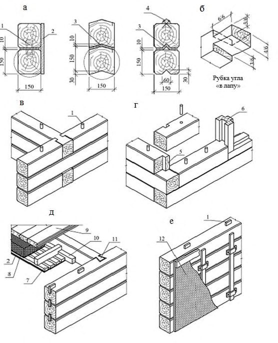
Рисунок А.1 Конструктивные решения наружных стен из бревен
А.2Брусчатые стены сруба
а - варианты сопряжения брусьев по высоте; б, в, г - узлы сопряжения продольных и поперечных брусчатых стен; д - конструкция перекрытия и его сопряжение с брусчатой стеной; е - обшивка внутренней поверхности брусчатых стен гипсокартонными листами по рейкам; 1 - шип; 2 - оштукатуривание по дранке; 3 - уплотнение; 4 - рейка; 5 - гребень (коренной шип); 6 - оконная коробка; 7 - щит наката перекрытия; 8 - звукоизоляция по уплотняющему слою; 9 - пол; 10 - черепной брусок; 11 - опирание балки перекрытия на стену (врубкой «ласточкин хвост»); 12 - гипсокартонный лист
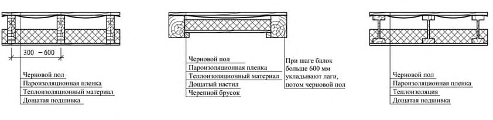
Рисунок А.2 - Конструктивные решения наружных стен из бруса
А.3Перекрытия
Рисунок А.3 - Конструктивные решения цокольных перекрытий
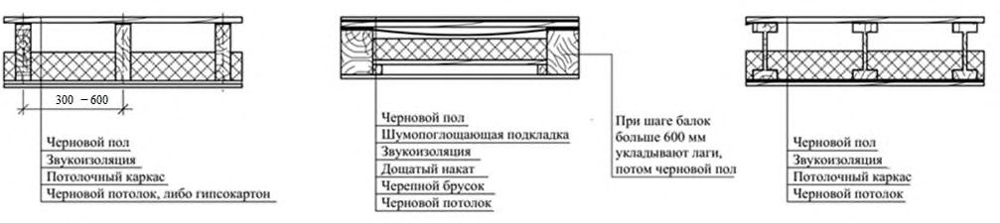
Рисунок А.4 - К онструктивные решения междуэтажных перекрытий
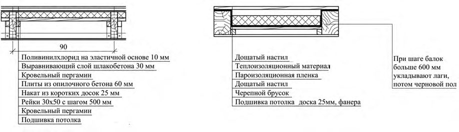
а б
Рисунок А.5 Конструктивные решения чердачных перекрытий
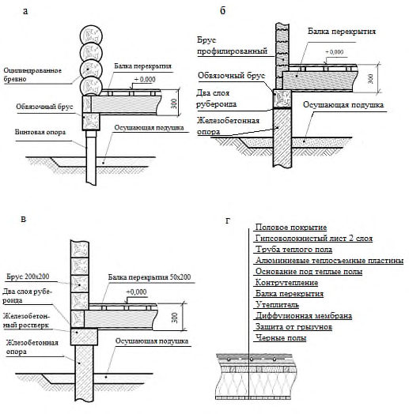
А.4Фундаменты
а - на винтовых опорах; б - на железобетонных опорах; в ̶ на железобетонных опорах с ленточным ростверком; г - состав цокольного перекрытия
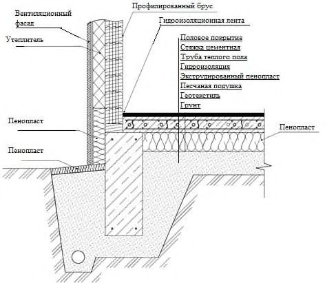
Рисунок А.6 Конструктивные решения узлов свайно-ростверковых фундаментов
Рисунок А.7 Конструктивное решение узла ленточного фундамента с обратной засыпкой
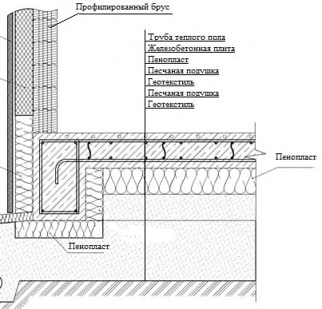
Рисунок А.8 Конструктивное решение узла фундамента утепленной шведской плитой
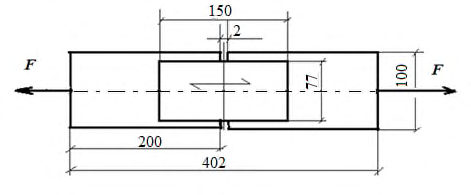
БПриложение Б. Особенности конструктивных решений, проектирования, расчета и испытаний соединений с применением металлических зубчатых пластин и косяков в элементах несущих конструкций перекрытий
Б.1Требования к металлическим зубчатым пластинам
Б.1.1 В отечественной практике МЗП изготавливают различные организации по техническим условиям или стандартам организации.
Б.1.2 Основные технические требования к МЗП:
- МЗП изготавливают из тонколистовой оцинкованной стали марки 250 с классом покрытия 275 или аналогичной стали с временным сопротивлением разрыву не менее 300 Н/мм² , пределом текучести не менее 250 Н/мм² , с относительным удлинением не менее 19 %, с массой цинкового покрытия не менее 275 г/м² ;
- толщина пластин - от 0,9 до 2,5 мм, размеры: ширина пластины - от 50 до 200 мм, длина - от 75 до 1200 мм;
- длина зуба - от 8 до 16 мм.
Б.1.3 Металлические зубчатые пластины должны применяться для изготовления соединений при условии, что толщина соединяемого элемента (доски) конструкций должна быть не менее 3,5-4-кратной длины зуба.
Б.1.4 Изготовление соединений на МЗП должно осуществляться на гидравлических прессах при удельном усилии запрессовки не менее 10 кгс/см² .
Б.2Методика испытаний для определения расчетной несущей способности соединений на металлических зубчатых пластинах
Б.2.1 Рекомендуемая полная программа испытаний предусматривает подготовку испытуемых образцов для определения прочности соединений при растяжении и сдвиге под различными углами (рисунок 8.3) действия нагрузки, а также при сжатии при действии нагрузки вдоль и поперек оси пластины.
Б.2.2 Проведение испытаний и обработка их результатов осуществляют по требованиям следующих стандартов: ГОСТ 33082, ГОСТ Р 58559, ГОСТ Р 58562.
Б.2.3 Результатами испытаний должны быть значения расчетной несущей способности соединений, Н/см² , площади пластины при углах α и β для соединений при растяжении и сжатии, а также расчетной несущей способности соединений, Н/см, линии длины стыка пластины при углах α/γ для соединений при сдвиге.
Примеры основных видов, размеры образцов и схемы испытаний соединений приведены на рисунках Б.1 ̶ Б.6.
Рисунок Б.1 ̶ Растяжение соединений вдоль волокон древесины и вдоль оси
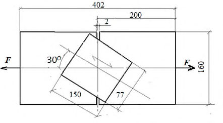
пластины
Рисунок Б.2 ̶ Растяжение соединений под различными углами к оси пластины и волокнам древесины
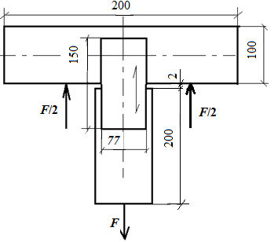
Рисунок Б.3 ̶ Растяжение соединений вдоль оси пластины и порек волокон древесины
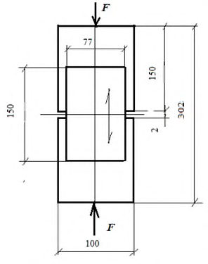
Рисунок Б.4 ̶ Сжатиие соединений вдоль оси пластины и волокон древесины
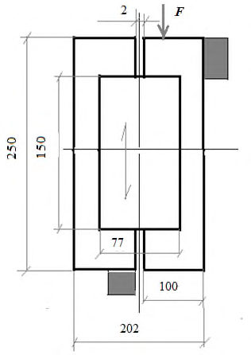
Рисунок Б.5 ̶ Сдвиг соединений вдоль оси пластины и волокнам древесины
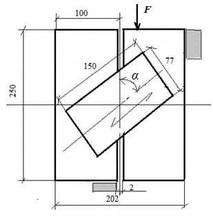
Рисунок Б.6 ̶ Сдвиг соединений под различными углами α (от 15 о до 165 о с интервалом через каждые 15 о ) между направлением волокон древесины и осью пластины
Б.2.4 Расчет соединений с применением полученных значений расчетной несущей способности должен выполняться согласно СП 64.13330.2017 (приложение К).
Б.3Рекомендации по проектированию и применению несущих металлодеревянных балок-ферм на металлических зубчатых косяках
- Б.3.1 Выбор оптимального конструктивного решения балок-ферм основан на условиях: максимального использования расчетной несущей способности крепления МЗК к поясам; расчетной длительной прочности древесины при растяжении нижнего пояса заданного сечения; деформативности балок-ферм, не допуская превышения расчетных прогибов допустимых нормативных величин.
- Б.3.2 Расчетная несущая способность крепления под углом 45 о одной пары МЗК к поясам балки-фермы, Н/см² , определяется по данным испытаний.
- Б.3.3 Используя экспериментальные и нормативные данные с помощью вычислительного комплекса, например SCAD Structure, осуществляют компьютерные расчеты балок различных пролетов с различными сечениями поясов при действии расчетных нагрузок.
Б.4Проектирование и расчет сплачиваемых составных балок из пиломатериалов на металлических зубчатых пластинах
- Б.4.1 Конструктивное решение опорного участка балки показано на рисунке 8.1.
Сплачивание пиломатериалов осуществляют с бобышкой или без нее в зависимости от используемого сечения пиломатериалов и получения необходимой высоты и длины балки.
- Б.4.2 Расчет балки предполагает определение необходимого размера МЗП и, при необходимости, количества бобышек по длине балки.
- Б.4.3 При расчете используют следующие параметры:
- L , пролет балки, м;
- а , шаг балок, м;
- [ q ], нормативная распределенная нагрузка на балку, кгс/м² .
- Б.4.4 Необходимо проверять прочность балки, ее прогиб и определять необходимый размер МЗП для соединения поясов с бобышкой или без нее.
Для этого определяют:
- величины изгибающих и касательных напряжений в балке, кгс/см² :
( W * - за вычетом момента сопротивления бобышек),
- прогиб в середине пролета балки, м:
где Q - поперечная сила на опоре балки, q · l · a /2, кгс;
M - изгибающий момент на пролете балки, q · a · l 2 /8, кгс·м;
B - ширина балки, см; h - высота балки, см;
S - статический момент сечения балки, bh 2 /8, см³ ;
J - момент инерции сечения балки, bh 3 /12, см 4 ;
W * - момент сопротивления сечения балки, bh 2 /6, см³ ;
[σ] - расчетные напряжения в балке от изгиба, кгс/см² ;
[τ] - расчетные касательные напряжения в балке от сдвига, кгс/см² ;
E - модуль упругости древесины, кгс/см² ;
[ƒ] - нормативный прогиб балки в середине пролета, м; kw - коэффициент податливости связей при расчете на изгиб, kw = 0,8; k ж - коэффициент податливости связей при расчете прогиба, k ж = 0,5.
Для определения размера МЗП и количества бобышек проверку осуществляют по величине сдвигающего усилия Т , кгс, на опоре:
где n св - количество связей (бобышек), шт.;
S сд - статический момент сдвигаемой части сечения балки относительно нейтральной оси, см³ , равный:
где h п - высота пояса балки при сплачивании с бобышкой, см; h б - толщина бобышки, см.
На МЗП, установленную углом α = 45°, действует усилие, кгс/см² , определяемое по формуле
Приняв общее количество бобышек n св, шт, определяют величину Т .
Проверку количества связей (бобышек) от опоры до середины пролета, шт, осуществляют по формуле
где М ср и M оп - изгибающие моменты, кг·м, на середине пролета и опоре соответственно, равные:
С учетом Т мзп при использовании для сплачивания поясов МЗП с бобышками под углом 45° определяют необходимые ее параметры - площадь на поясах F , см² , и протяженность длины среза МЗП l ср , см.
При известных величинах расчетной несущей способности соединений МЗП на растяжение [ R р], кгс/см² , и при срезе [ R ср], кгс/см, указанные параметры будут равны:
По их величинам подбирают стандартный размер МЗП. где lg А = 17,1.
Фактическая и расчетная несущие способности конструкции связаны неравенством:
ВПриложение В. Особенности проектирования и расчета стропильных ферм на металлических зубчатых пластинах для крыши
В.1Определение несущей способности ферм по показателям их кратковременных испытаний
В.1.1 Кратковременные испытания ферм проводят с учетом требований ГОСТ Р 57790.
Основное условие перехода от результатов кратковременных испытаний к эксплуатационной несущей способности ферм -учет длительности действующих нагрузок в условиях эксплуатации, что предусмотрено ГОСТ Р 57790-2017 (раздел 9 и приложение Б).
В.1.2 При выполнении испытаний и переводе полученных результатов к реальным значениям несущей способности фермы следует учитывать:
- эксплуатационные нагрузки, принятые в проекте фермы;
- коэффициент безопасности для перехода от режима кратковременных испытаний к эксплуатационным с учетом того, что для работы ферм на МЗП характерно пластическое разрушение;
- фиксированную продолжительность испытаний от начала нагружения до разрушения фермы, что позволяет учитывать это время при определении коэффициента безопасности.
В.1.3 Фермы на МЗП каркаса крыши главным образом воспринимают временную снеговую нагрузку. Для этого случая нормами проектирования установлен коэффициент длительной прочности древесины равным К дл = 0,66, что соответствует режиму нагружения В по СП 64.13330.
Коэффициент безопасности (запаса прочности) К б определяют по результатам испытаний сопоставлением фактической несущей способности N экс (максимальной разрушающей нагрузки), полученной при испытаниях, с расчетной несущей способностью Nd , установленной при проектировании конструкции.
Согласно ГОСТ Р 57790 величину К б с учетом продолжительности приведенного времени испытаний t исп и расчетного эквивалентного времени действия эксплуатационной нагрузки t экс (срок службы конструкции при постоянно действующей нагрузке или расчетное время, эквивалентное времени действия временной нагрузки) для пластического вида разрушения конструкции определяют из выражения
При невыполнении этого неравенства испытанная конструкция не обладает необходимой несущей способностью и бракуется.
В.2Учитываемые показатели при проведении автоматизированного компьютерного расчета ферм
- В.2.1 Проектирование конструкций осуществляют с применением программ автоматизированного компьютерного расчета.
- В.2.2 В расчетной схеме конструкции узлы фермы принимают шарнирными, а расчетные параметры стержней, соединяемых в узлах, принимают по таблице В.1.
Таблица В.1
| Расчетный параметр | Материал стержня | Материал стержня |
|---|---|---|
| Древесина | Металл (при использовании МЗК) | |
| Плотность, кг/м³ | 500 | 7 850 |
| Модуль упругости, кгс/см² | 100 000 | 2 100 000 |
| Коэффициент Пуассона | 0,45 | 0,30 |
| Сечения элементов, см × см | Задаются при проектировании | Задаются при проектировании |
В.3Определение надежности работы соединений на МЗП в узлах ферм
- В.3.1 Наличие проекта фермы, результатов испытаний и проведенного компьютерного расчета по определению нормальных осевых усилий в стержнях позволяют оценивать надежности работы фермы в узлах с учетом размеров установленных в них МЗП.
- В.3.2 Проверку можно проводить расчетом необходимой площади или линии сдвига МЗП в наиболее нагруженных узлах (по данным расчета или по характеру разрушения при испытаниях). Для этого должны быть данные о величинах расчетной несущей способности примененного типа МЗП при растяжении и сдвиге при различных углах действия усилия и расположения пластины по отношению к волокнам древесины α, β, γ (см. Б.2).
- В.3.3 Необходимую расчетную величину площади пластины определяют с учетом количества стержней, сходящихся в узле, величин нормального усилия в каждом стержне N н и расчетной несущей способности МЗП при растяжении R р,α,β при фактических углах α и β в каждом стержне.
Тогда условие определения необходимой расчетной площади F р пластины, например, если в узле сходятся три стержня (1, 2, 3), имеет вид:
где N н,1 , N н,2, N н,3 - величины нормальных усилий в стержнях 1, 2 и 3 соответственно;
R р,α,β(1) , R р,α,β(2) , R р,α,β(3) - величины расчетных несущих способностей пластин на растяжение с учетом углов α и β при расположении пластин к стержням 1, 2 и 3 соответственно.
Сравнивают расчетную площадь МЗП, полученную по результатам расчетов, с предусмотренной в проекте.
- В.3.4 Необходимую расчетную величину линии среза МЗП в узле L ср определяют из условия:
где R ср.α,γ - величины расчетных несущих способностей пластин на срез с учетом углов α и γ.
- В.3.5 Сравнивают расчетную площадь и величину линии среза МЗП, полученные по результатам расчетов, с указанными в проекте. где L - величина пролета; q - величина равномерно распределенной нагрузки;
E - расчетный модуль упругости при изгибе;
I - момент инерции сечения элемента ( b - ширина; h - высота).
Подставляя в формулу (Г.1) значения: q = 8 σ · W / L 2 ; W = b · h 2 / 6 и I = b · h 3 / 12 (где W - момент сопротивления сечения в см³ , I - момент инерции сечения в см 4 , σ - расчетная величина прочности в кгс/см² ) получают x
Например, при расчетной величине прочности и модуля упругости для пиломатериала класса С24 (σ = 127 кгс/см² ; Е = 67000 кгс/см² ), высоте сечения 15 см и пролете элемента 400 см допустимая относительная величина прогиба составит
Это существенно отличается от нормируемых величин по СП 64.13330, которые регламентированы от 1/150 до 1/300.
ГПриложение Г. Особенности определения величин предаварийного состояния несущих изгибаемых конструкций перекрытий
- Г.1 Предпосылки установления предаварийных величин прогибов ̶ учет расчетной несущей способности изгибаемых элементов перекрытий при действии нормативных величин нагрузок на перекрытие.
- Г.2 Для определения аварийных относительных величин прогибов к величине пролета x ( x = L/f , где L - пролет, м; f - прогиб, м) по предельному состоянию второй группы необходимо исходить из расчетных величин прочности и модуля упругости изгибаемых деревянных конструкций.
Величины прогиба при равномерно распределенной нагрузке определяется по формуле
Библиография
- [1] Федеральный закон от 30 декабря 2009 г. № 384-ФЗ «Технический регламент о безопасности зданий и сооружений»
- [2] Федеральный закон от 21 декабря 1994 г. № 69-ФЗ «О пожарной безопасности»
- [3] Федеральный закон от 22 июля 2008 г. № 123-ФЗ «Технический регламент о требованиях пожарной безопасности»
- [4] Федеральный закон от 23 ноября 2009 г. № 261-ФЗ «Об энергосбережении и о повышении энергетической эффективности и о внесении изменений в отдельные законодательные акты Российской Федерации»
- [5] Федеральный закон от 30 марта 1999 г. № 52-ФЗ «О санитарноэпидемиологическом благополучии населения»
- [6] Постановление Правительства Российской Федерации от 16 сентября 2020 г. № 1479 «Об утверждении Правил противопожарного режима в Российской Федерации»